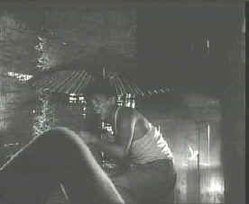

| Woman
in the Dunes/A,B+ |
|
Image/1964/127m/FS
1.33/Subtitles
|
One of the creepiest horror films ever made, that is, if you can
call it a horror film. Woman in the Dunes is like a
nightmare that repeats itself endlessly until it becomes a
reality. Part of the brilliance is in the simplicity of
delivery. The film is adapted for the screen from the Kobo Abe novel by director Hiroshi Teshigahara and Abe, and brilliantly
distills the written words, bit by bit of sand. Teshigahara
makes an amazingly powerful visual film. Dialog is spare, clean
An amateur entomologist makes a trip to
the sea shore in hope of finding and categorizing a new insect
in the sand. He nurtures hope of some small recognition to lift
him from the bonds of everyday humdrum existence. What he
encounters at the isolated village by the sea is far from what
he or anyone could ever expect.
 |
| An
umbrella protects against showering sand..
©Image |
When ensuing night sneaks up as the man searches in the sand, he
realizes he has missed the last bus back to the city. A villager
suggests he find shelter for the night and offers to help. He
takes the man to the home of a woman, dug out and set into the
sand dunes, where the man climbs down a rope ladder to share the
woman's humble surroundings for the night.
The sand surrounds them, threatening to
take back the ground claimed by the house. Water and food must
be protected from the falling grains and a mysterious rot eats
at the wood of the house. The woman is recently widowed and
struggling to keep up with the encroaching sand and the loneliness.
Woman
in the Dunes casts a hypnotic spell upon its viewer. The
power of the sand is mesmerizing. Teshigahara makes full use of
the claustrophobic surroundings. Confined by the bounds of a
small house which is confined by the encroaching sand makes for
suffocating material. The black and white photography adds to
the desolation. The stark darkness adds to the isolation. Toru
Takemitsu's wonderful score from echoes the the sound of
isolation born on the grinding assault of the sand.
Movie lovers can count their blessing
since Image Entertainment has used excellent source material for
the DVD transfer of Woman in the Dunes. This is by far
the best print I have seen, which includes several theatrical
screenings. There are few scratches in the print and dirt is
minimal. Overall, the contrast is well handled, though some of
the darker scenes could have used more light and contrast
output. Detail is good. Not good enough to count each individual
grain of sand, but resolved enough to make you taste the
grittiness. White English titles are easy to read on the image.
The translation is quite good. The sound is slightly thin, but
the only hiss you will hear is the relentless encroachment of
the sand.
Woman in the Dunes is not to be
missed! Cinematic gems such as this are few and far
between. |
The
Feature
Archive has articles ranging from A
Western is a Western is a Western to Screen
Voices, The
Heistmasters, Akira
Kurosawa, film preservationist Robert
Harris and Shawshank Redemption director Frank
Darabont.

Catch the Hollywood take on Blonde Bimbos by clicking on the
image above.
Check out the Movie
Poster Archive for short bios and images of
Susan Hayward, Kirk Douglas, Katharine Hepburn and many more.
This month's featured star is Clark
Gable.
Imaging
Science Foundation
The Imaging
Science Foundation promotes proper standards in home theater
viewing. ISF trained technicians offer monitor calibration
services to consumers. The difference in a properly
calibrated monitor can be astounding. Click on the image to find
an ISF member near you.
HOT
LINKS
DVD
Verdict
They may be judgmental, but
that's the point, isn't it. Lots of DVD reviews plus news and
more
The
Home Theater Forum
Looking for lively and helpful
exchanges on home theater, DVD, movies. Visit this friendly site
and get a hardy welcome.
Home Theater
Reference Reviewing System

When you read a DVD review it's of utmost importance to know
what equipment is being used to evaluate quality. Click on the
projectors to find out more.
|